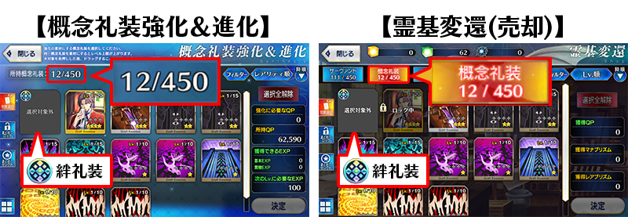

- 6/19
- 【來自迦勒底廣報局】關於6月的遊戲更新
非常感謝各位使用「Fate/Grand Order」。
來自迦勒底廣報局，告知關於預定2019年6月的下次遊戲更新。
以下介紹更新後反映的更新內容中，具有代表性的更新內容。
①絆禮裝修改為「靈基變還(販賣)・強化素材」的對象外
與從者的絆等級到達10後可獲得的報酬概念禮裝(絆禮裝)在「靈基變還(販賣)・強化」中，為了不錯當成素材使用，變得無法做為素材選擇。
因此，概念禮裝的持有上限數計算不再包含絆禮裝的同時，向過去將絆禮裝在「靈基變還(販賣)・強化素材」中做為素材使用的各位玩家，對應返還對象概念禮裝。

※開發中畫面。
②智慧排序、挑選排序的改善
修改為就算智慧排序、挑選排序ON的狀態，選擇中的從者和概念禮裝也會排在前面。
因此，容易發現選擇中的從者和概念禮裝見，另外，更容易選擇「取下(はずす)」。
※開發中畫面。
③在概念禮裝強化畫面的篩選器追加「概念禮裝EXP卡」
概念禮裝強化畫面的素材選擇畫面，在篩選器追加「概念禮裝EXP卡」。
因此，更容易選擇概念禮裝的強化素材。
以上為預定2019年6月實施的下次遊戲更新主要內容。
另外今後，也預定在期間限定活動和期間限定宣傳活動中，會有將通過主線關卡設為開放條件的情況。
無論如何，如果推進主線關卡的攻略會有所幫助。
今後也請多多指教「Fate/Grand Order」。